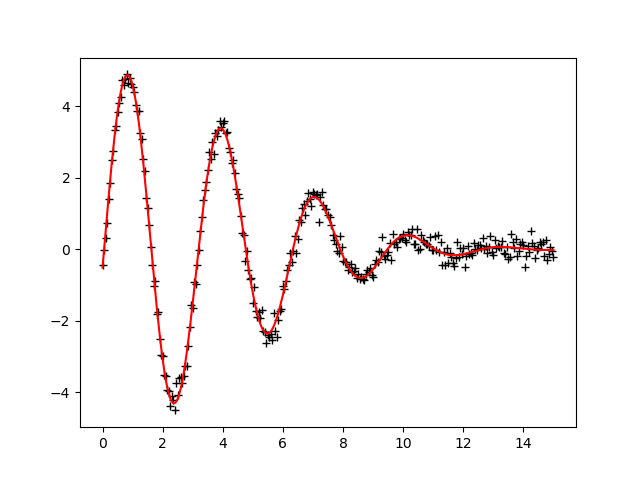

Note
Click here to download the full example code
doc_parameters_basic.py¶
Out:
[[Fit Statistics]]
# fitting method = leastsq
# function evals = 64
# data points = 301
# variables = 4
chi-square = 11.0484618
reduced chi-square = 0.03720021
Akaike info crit = -986.750534
Bayesian info crit = -971.922093
[[Variables]]
amp: 4.96078856 +/- 0.03791272 (0.76%) (init = 10)
decay: 0.02437789 +/- 4.2572e-04 (1.75%) (init = 0.1)
shift: -0.10363212 +/- 0.00981677 (9.47%) (init = 0)
omega: 2.00019266 +/- 0.00309578 (0.15%) (init = 3)
[[Correlations]] (unreported correlations are < 0.100)
C(shift, omega) = -0.785
C(amp, decay) = 0.584
C(amp, shift) = -0.117
##
import warnings
warnings.filterwarnings("ignore")
##
# <examples/doc_parameters_basic.py>
import numpy as np
from lmfit import Minimizer, Parameters, report_fit
# create data to be fitted
x = np.linspace(0, 15, 301)
data = (5.0 * np.sin(2.0*x - 0.1) * np.exp(-x*x*0.025) +
np.random.normal(size=x.size, scale=0.2))
# define objective function: returns the array to be minimized
def fcn2min(params, x, data):
"""Model a decaying sine wave and subtract data."""
amp = params['amp']
shift = params['shift']
omega = params['omega']
decay = params['decay']
model = amp * np.sin(x*omega + shift) * np.exp(-x*x*decay)
return model - data
# create a set of Parameters
params = Parameters()
params.add('amp', value=10, min=0)
params.add('decay', value=0.1)
params.add('shift', value=0.0, min=-np.pi/2., max=np.pi/2.)
params.add('omega', value=3.0)
# do fit, here with the default leastsq algorithm
minner = Minimizer(fcn2min, params, fcn_args=(x, data))
result = minner.minimize()
# calculate final result
final = data + result.residual
# write error report
report_fit(result)
# try to plot results
try:
import matplotlib.pyplot as plt
plt.plot(x, data, 'k+')
plt.plot(x, final, 'r')
plt.show()
except ImportError:
pass
# <end of examples/doc_parameters_basic.py>
Total running time of the script: ( 0 minutes 0.166 seconds)